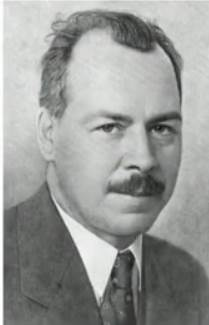
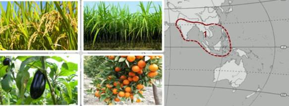
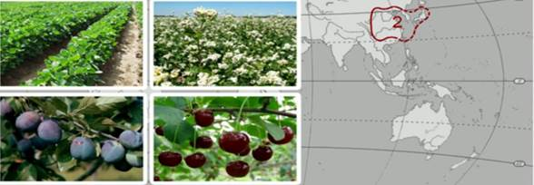
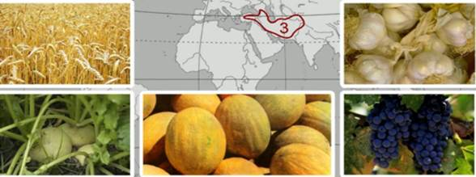
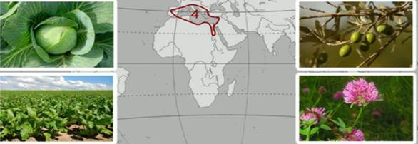
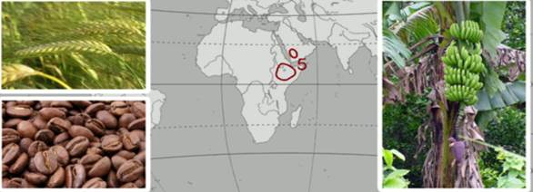
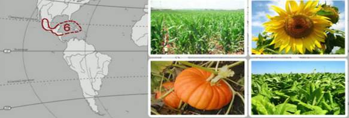
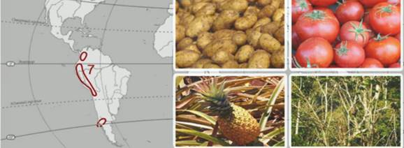

Наиболее полную и целостную теорию центров происхождения видов культурных растений сформулировал Николай Иванович Вавилов (Рис. 1) в ходе исследований в 20-30-е годы прошлого века.

Рис. 1. Николай Иванович Вавилов (Источник)
В своих экспедициях Вавилов собрал богатейшую коллекцию культурных растений, нашел родственные связи между ними, предсказал возможные для выведения ранее неизвестные, но заложенные генетически свойства этих культур. Он обнаружил существование районов с максимальной концентрацией видов, разновидностей и сортов определенных культурных растений, а также то, что эти районы связаны с местами древнейших цивилизаций.
В ходе исследований Н.И. Вавилова было выявлено семь основных географических центров происхождения культурных растений.
1. Южноазиатский тропический центр (Рис. 2) включает в себя тропическую Индию, Индокитай, Южный Китай, Юго-Восточную Азию. Культурные растения центра: рис, сахарный тростник, огурец, баклажан, цитрусовые, манго, банан, кокосовая пальма, черный перец – около 33 % всех культурных растений.

Рис. 2. Южноазиатский тропический центр (Источник)
2. Восточноазиатский центр – Центральный и Восточный Китай, Япония, Корея, Тайвань (Рис. 3). Отсюда произошли соя, просо, гречиха, слива, вишня, редька, грецкий орех, мандарин, хурма, бамбук, женьшень – около 20 % культурных растений.

Рис. 3. Восточноазиатский центр (Источник)
3. Юго-западноазиатский центр – Малая Азия, Средняя Азия, Иран, Афганистан, Юго-Западная Индия (Рис. 4). Этот центр является прародителем пшеницы, ячменя, ржи, фундука, бобовых культур, льна, конопли, репы, чеснока, винограда, абрикоса, груши, дыни – порядка 14 % всех культурных растений.

Рис. 4. Юго-западноазиатский центр (Источник)
4. Средиземноморский центр – страны побережья Средиземного моря (Рис. 5). Отсюда вышли капуста, сахарная свекла, маслины, клевер, чечевица, овес, лен, лавр, кабачок, петрушка, сельдерей, виноград, горох, бобы, морковь, мята, тмин, хрен, укроп – около 11 % культурных растений.

Рис. 5. Средиземноморский центр (Источник)
5. Абиссинский, или Африканский центр – Абиссинское нагорье Африки в районе Эфиопии (Рис. 6). Оттуда произошли пшеница, ячмень, сорго, кофе, бананы, кунжут, арбуз – порядка 4 % культурных растений.

Рис. 6. Абиссинский, или Африканский центр (Источник)
6. Центральноамериканский центр - Южная Мексика (Рис.7). Родоначальник фасоли, кукурузы, подсолнечника, хлопчатника, какао, тыквы, табака, топинамбура, папайи – около 10 % культурных растений.

Рис. 7. Центральноамериканский центр (Источник)
7. Южноамериканский, или Андийский центр - западное побережье Южной Америки (Рис. 8). Из этого центра произошли картофель, томат, ананас, сладкий перец, хинное дерево, кокаиновый куст, гевея, арахис – около 8 % культурных растений.

Рис. 8. Южноамериканский, или Андийский центр (Источник)
Мы познакомились с важнейшими центрами происхождения культурных растений, они связаны не только с флористическим богатством, но и с древнейшими цивилизациями.
Список литературы
1. Мамонтов С.Г., Захаров В.Б., Агафонова И.Б., Сонин Н.И. Биология. Общие закономерности. – Дрофа, 2009.
2. Пономарева И.Н., Корнилова О.А., Чернова Н.М. Основы общей биологии. 9 класс: Учебник для учащихся 9 класса общеобразовательных учреждений/Под ред. проф. И.Н. Пономаревой. – 2-е изд., перераб. – М.: Вентана-Граф, 2005.
3. Пасечник В.В., Каменский А.А., Криксунов Е.А. Биология. Введение в общую биологию и экологию: Учебник для 9 класса, 3-е изд., стереотип. – М.: Дрофа, 2002.
Дополнительные рекомендованные ссылки на ресурсы сети Интернет
1. Dic.academic.ru (Источник).
2. Proznania.ru (Источник).
3. Biofile.ru (Источник).
Домашнее задание
1. Кто сформулировал полную теорию центров происхождения видов культурных растений?
2. Каковы основные географические центры происхождения культурных растений?
3. С чем связаны центры происхождений культурных растений?